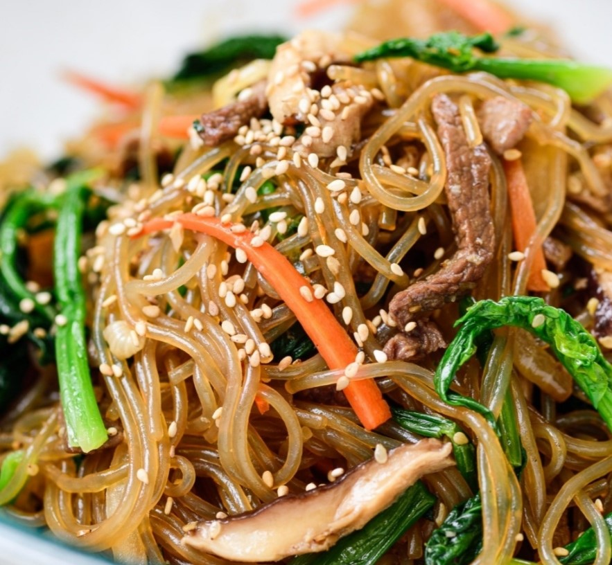
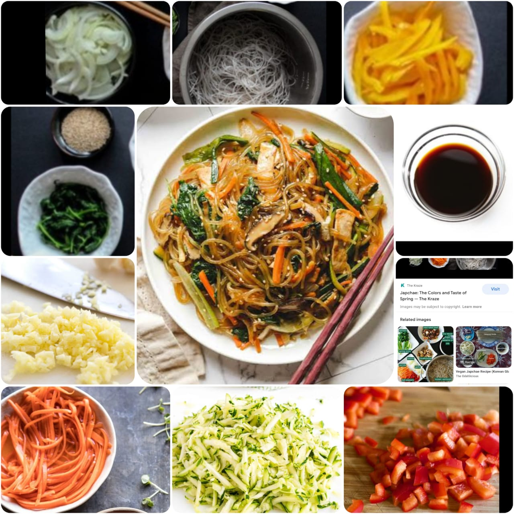

Japchae
Home
Japchae (잡채) is a savory and slightly sweet dish of stir-fried glass noodles and vegetables that is popular in Korean cuisine. Japchae is typically prepared with dangmyeon (당면), a type of cellophane noodles made from sweet potato starch; the noodles are mixed with assorted vegetables, meat, and mushrooms, and seasoned with soy sauce and sesame oil.

Ingredients
1 package sweet potato noodles (250g)
1 package smoked firm tofu (300g)
1 medium zucchini (200g)
1 small carrot (130g)
1 medium onion (150g)
3 scallion stalks
3 garlic cloves
6 shiitake mushrooms, rehydrated
large handful of spinach
sesame seeds
5 tablespoons of soy sauce
2 tablespoons of sugar
1 tablespoon of sesame oil

Nutrition Facts
Calories 761.3
Total Fat 2.0g
Cholesterol 0mg
Sodium 20mg
Total Carbohydrate 84.7g
Vitamin C 24%
vitamin A 32%
Procedure
Bring a large pot of water to a boil and cook sweet potato noodles following the directions on the package. Once cooked, drain and rinse with cold water to stop the cooking process. Add 1 tsp of sesame oil to coat the noodles, and then use scissors to cut the noodles (around 3-4 times).
In the same pot, add in the spinach and blanch for 30 seconds.
Rinse with cold water and squeeze the excess liquid out using a towel. Chop the bundled up spinach in half.
Slice all the vegetables into match stick sized pieces. They should all be relatively the same size. Cut the tofu into thin rectangles.
Put all the sauce ingredients into a small bowl and stir.
In a large wok, over medium high heat fry the smoked tofu with a little bit of sesame oil just until lightly browned on each side. Transfer into another bowl and set aside.
In the same wok, fry onions and garlic for 1 minute. Then add in the shiitake mushrooms and carrot and fry for another minute. Add in the zucchini and scallions and fry for one more minute.
Slightly turn down the heat and add in the noodles, spinach tofu and sauce.
Toss and cook until all the sauce is all soaked up.
Serve and garnish with toasted sesame seeds.
Expert Guide
Back ←
Scroll to Top ↑